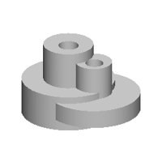
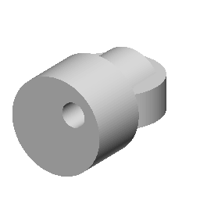
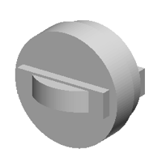
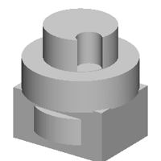
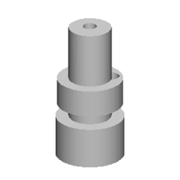
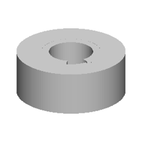
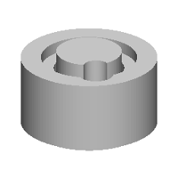
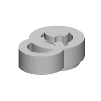
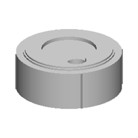

| 정답 |  | | |
| 0 | — | 실행 실패
StdFail_NotDone: GC_MakeArcOfCircle::Value() - no result
4 째 줄 | 1 import cadquery as cq
2 w0=cq.Workplane('YZ',origin=(53,0,0))
3 w1=cq.Workplane('YZ',origin=(21,0,0))
4 r=w0.sketch().segment((17,15),(21,15)).arc((20,17),(19,19)).close().assemble().finalize().extrude(-153).union(w0.sketch().segment((19,15),(21,15)).arc((20,17),(19,19)).close().assemble().finalize().extrude(-107)).union(w1.sketch().arc((19,15),(20,17),(21,19)).segment((19,19)).close().assemble().finalize().extrude(7)) |
| 250 | — | 실행 실패
SyntaxError: '(' was never closed
1 째 줄 1248 째 글자 | 1 b0 = place(cq.Workplane("XY").polyline([(0.0, 0.0), (10.0, 0.0), (10.0, 10.0), (10.0, 11.0), (0.0, 11.0), (0.0, 10.0), (0.0, 9.0), (0.0, 7.0), (0.0, 5.0), (0.0, 3.0), (0.0, 2.0), (0.0, 1.0), (0.0, 0.0), (0.0, 1.0), (0.0, 2.0), (0.0, 1.0), (0.0, 2.0), (0.0, 3.0), (0.0, 1.0), (0.0, 2.0), (0.0, 1.0), (0.0, 2.0), (0.0, 1.0), (0.0, 2.0), (0.0, 1.0), (0.0, 2.0), (0.0, 1.0), (0.0, 2.0), (0.0, 1.0), (0.0, 2.0), (0.0, 1.0), (0.0, 2.0), (0.0, 1.0), (0.0, 2.0), (0.0, 1.0), (0.0, 2.0), (0.0, 1.0), (0.0, 2.0), (0.0, 1.0), (0.0, 2.0), (0.0, 1.0), (0.0, 2.0), (0.0, 1.0), (0.0, 2.0), (0.0, 1.0), (0.0, 2.0), (0.0, 1.0), (0.0, 2.0), (0.0, 1.0), (0.0, 2.0), (0.0, 1.0), (0.0, 2.0), (0.0, 1.0), (0.0, 2.0), (0.0, 1.0), (0.0, 2.0), (0.0, 1.0), (0.0, 2.0), (0.0, 1.0), (0.0, 2.0), (0.0, 1.0), (0.0, 2.0), (0.0, 1.0), (0.0, 2.0), (0.0, 1.0), (0.0, 2.0), (0.0, 1.0), (0.0, 1.0), (0.0, 2.0), (0.0, 1.0), (0.0, 2.0), (0.0, 1.0), (0.0, 2.0), (0.0, 1.0), (0.0, 2.0), (0.0, 1.0), (0.0, 2.0), (0.0, 1.0), (0.0, 2.0), (0.0, 1.0), (0.0, 2.0), (0.0, 1.0), (0.0, 2.0), (0.0, 1.0), (0.0, 2.0), (0.0, 2.0), (0.0, 1.0), (0.0, 2.0), (0.0, 1.0), (0.0, 2.0), (0.0, 2.0), (0.0, 1.0), (0.0, 1.0), (0.0, 2.0), (0.0, 2.0), (0.0, 1.0), (0.0, 1.0), (0.0, 2.0), (0.0, 2.0), (0.0, 1.0), (0.0 ^ |
| 500 | — | 실행 실패
NameError: name 'b2' is not defined
3 째 줄 | 1 b0 = place(cq.Workplane("XZ").polyline([(0.0, 0.0), (23.0, 0.0), (23.0, 21.0), (14.0, 21.0), (14.0, 42.4), (0.0, 42.4)]).close().revolve(360, (0, 0, 0), (0, 1, 0)).faces(">Z").workplane(origin=(0, 0, 42.4)).center(10.7, 10.0).hole(10.7, 10.0).faces(">Z").workplane(origin=(0, 0, 42.4)).center(10.7, 10.0).hole(10.7, 10.0), "z", (0.0, 0.0, 0.0))
2 b1 = place(cq.Workplane("XZ").polyline([(0.0, 0.0), (28.0, 0.0), (28.0, 21.0), (15.0, 21.0), (15.0, 42.4), (0.0, 42.4)]).close().revolve(360, (0, 0, 0), (0, 1, 0)).faces(">Z").workplane(origin=(0, 0, 42.4)).center(10.7, 10.0).hole(10.7, 10.0).faces(">Z").workplane(origin=(0, 0, 42.4)).center(10.7, 10.0).hole(10.7, 10.0), "z", (0.0, 0.0, 0.0))
3 result = b0.union(b1.union(b2)) |
| 750 |  | IoU 0.63 | 1 b0 = place(cq.Workplane("XZ").polyline([(0.0, 0.0), (28.2, 0.0), (28.2, 21.9), (15.1, 21.9), (15.1, 44.4), (0.0, 44.4)]).close().revolve(360, (0, 0, 0), (0, 1, 0)).faces(">Z").workplane(origin=(0, 0, 44.4)).center(1.4, -1.8).hole(12.1, 11.1), "z", (-18.6, 0.0, 0.0))
2 b1 = place(cq.Workplane("XZ").polyline([(0.0, 0.0), (28.2, 0.0), (28.2, 11.1), (11.1, 11.1), (11.1, 25.8), (0.0, 25.8)]).close().revolve(360, (0, 0, 0), (0, 1, 0)).faces(">Z").workplane(origin=(0, 0, 25.8)).center(1.4, -1.8).hole(10.8, 10.8), "z", (-18.6, 0.0, 0.0))
3 b2 = place(cq.Workplane("XZ").polyline([(0.0, 0.0), (28.2, 0.0), (28.2, 11.1), (11.1, 11.1), (11.1, 31.1), (0.0, 31.1)]).close().revolve(360, (0, 0, 0), (0, 1, 0)).faces(">Z").workplane(origin=(0, 0, 31.1)).center(1.8, -1.8).hole(10.8, 10.8), "z", (0.0, 0.0, 0.0))
4 result = b0.union(b1.union(b2)) |
| 1000 | — | 실행 실패
NameError: name 'b4' is not defined
5 째 줄 | 1 b0 = place(cq.Workplane("XZ").polyline([(0.0, 0.0), (18.0, 0.0), (18.0, 11.2), (10.0, 11.2), (10.0, 31.2), (0.0, 31.2)]).close().revolve(360, (0, 0, 0), (0, 1, 0)).faces(">Z").workplane(origin=(0, 0, 31.2)).center(1.4, -1.0).hole(8.1), "z", (0.0, 0.0, 17.9))
2 b1 = place(cq.Workplane("XZ").polyline([(0.0, 0.0), (28.1, 0.0), (28.1, 18.9), (15.9, 18.9), (15.9, 34.4), (0.0, 34.4)]).close().revolve(360, (0, 0, 0), (0, 1, 0)).faces(">Z").workplane(origin=(0, 0, 34.4)).center(-1.4, -1.4).hole(10.0), "z", (0.0, 0.0, 17.9))
3 b2 = place(cq.Workplane("XZ").polyline([(0.0, 0.0), (24.0, 0.0), (24.0, 14.9), (14.0, 14.9), (14.0, 29.9), (0.0, 29.9)]).close().revolve(360, (0, 0, 0), (0, 1, 0)).faces(">Z").workplane(origin=(0, 0, 29.9)).center(-1.0, -1.0).hole(10.0), "z", (0.0, 0.0, -17.0))
4 b3 = place(cq.Workplane("XZ").polyline([(0.0, 0.0), (24.0, 0.0), (24.0, 14.9), (10.0, 14.9), (10.0, 31.9), (0.0, 31.9)]).close().revolve(360, (0, 0, 0), (0, 1, 0)).faces(">Z").workplane(origin=(0, 0, 31.9)).center(-1.0, -1.0).hole(10.0, 15.9), "z", (0.0, 0.0, -17.0))
5 result = b0.union(b1.union(b2.union(b3.union(b4.union(b5))))) |
| 1250 |  | IoU 0.60 | 1 b0 = place(cq.Workplane("XZ").polyline([(0.0, 0.0), (28.9, 0.0), (28.9, 21.1), (17.8, 21.1), (17.8, 4.3), (0.0, 4.3)]).close().revolve(360, (0, 0, 0), (0, 1, 0)).faces(">Z").workplane(origin=(0, 0, 21.1)).center(12.1, -10.1).hole(14.1).faces(">Z").workplane(origin=(0, 0, 21.1)).center(10.9, -10.1).hole(12.1, 10.5), "z", (0.0, 17.9, 0.0))
2 b1 = place(cq.Workplane("XY").circle(29.6).extrude(38.0).faces(">Z").workplane(origin=(0, 0, 38.0)).center(11.9, -10.1).hole(15.1), "y", (0.0, -19.6, 0.0))
3 b2 = place(cq.Workplane("XY").circle(21.1).extrude(29.5), "y", (0.0, 17.9, 0.0))
4 b3 = place(cq.Workplane("XY").circle(20.0).extrude(26.5).faces(">Z").workplane(origin=(0, 0, 26.5)).center(11.9, -10.1).hole(12.1), "y", (0.0, -19.6, 0.0))
5 result = b0.union(b1.union(b2)) |
| 1500 |  | IoU 0.57 | 1 b0 = place(cq.Workplane("XY").box(50.0, 34.2, 13.6, centered=(True, True, False)).faces(">Z").workplane(origin=(0, 0, 13.6)).center(11.1, -1.0).hole(10.1, 10.1), "z", (0.0, 17.6, 13.6))
2 b1 = place(cq.Workplane("XZ").polyline([(0.0, 0.0), (23.6, 0.0), (23.6, 11.1), (15.1, 11.1), (15.1, 2.6), (0.0, 2.6)]).close().revolve(360, (0, 0, 0), (0, 1, 0)).faces(">Z").workplane(origin=(0, 0, 11.1)).center(10.9, -10.1).hole(10.9), "z", (0.0, 17.6, 13.6))
3 b2 = place(cq.Workplane("XZ").polyline([(0.0, 0.0), (29.6, 0.0), (29.6, 14.0), (17.6, 14.0), (17.6, 24.6), (0.0, 24.6)]).close().revolve(360, (0, 0, 0), (0, 1, 0)), "y", (0.0, 17.6, 13.6))
4 b3 = place(cq.Workplane("XZ").polyline([(0.0, 0.0), (26.6, 0.0), (26.6, 23.0), (18.6, 23.0), (18.6, 10.0), (0.0, 10.0)]).close().revolve(360, (0, 0, 0), (0, 1, 0)), "y", (0.0, 17.6, 13.6))
5 result = b0.union(b1.union(b2.union(b3))) |
| 1750 |  | IoU 0.44 | 1 b0 = place(cq.Workplane("XZ").polyline([(0.0, 0.0), (29.0, 0.0), (29.0, 17.1), (18.5, 17.1), (18.5, 34.4), (0.0, 34.4)]).close().revolve(360, (0, 0, 0), (0, 1, 0)).faces(">Z").workplane(origin=(0, 0, 34.4)).center(12.1, -10.0).hole(13.0, 17.0), "z", (0.0, 0.0, 13.0))
2 b1 = place(cq.Workplane("XZ").polyline([(0.0, 0.0), (24.2, 0.0), (24.2, 14.0), (14.1, 14.0), (14.1, 2.9), (0.0, 2.9)]).close().revolve(360, (0, 0, 0), (0, 1, 0)).faces(">Z").workplane(origin=(0, 0, 14.0)).center(10.9, -10.1).hole(10.9, 8.1), "z", (0.0, 0.0, -17.0))
3 b2 = place(cq.Workplane("XZ").polyline([(0.0, 0.0), (24.0, 0.0), (24.0, 14.0), (14.0, 14.0), (14.0, 3.7), (0.0, 3.7)]).close().revolve(360, (0, 0, 0), (0, 1, 0)).faces(">Z").workplane(origin=(0, 0, 14.0)).center(10.9, -10.1).hole(10.9, 8.0), "z", (0.0, 0.0, -17.0))
4 b3 = place(cq.Workplane("XY").box(52.9, 39.4, 27.2, centered=(True, True, False)).faces(">Z").workplane(origin=(0, 0, 27.2)).center(11.0, -10.0).hole(11.0, 13.0), "z", (0.0, 0.0, -17.0))
5 result = b0.union(b1.union(b2.union(b3))) |
| 2000 |  | IoU 0.45 | 1 b0 = place(cq.Workplane("XZ").polyline([(0.0, 0.0), (25.0, 0.0), (25.0, 29.9), (15.5, 29.9), (15.5, 100.0), (0.0, 100.0)]).close().revolve(360, (0, 0, 0), (0, 1, 0)).faces(">Z").workplane(origin=(0, 0, 100.0)).center(-1.2, 1.4).hole(10.1, 5.1), "z", (0.0, 0.0, 0.0))
2 b1 = place(cq.Workplane("XZ").polyline([(0.0, 0.0), (24.0, 0.0), (24.0, 19.9), (14.8, 19.9), (14.8, 4.7), (0.0, 4.7)]).close().revolve(360, (0, 0, 0), (0, 1, 0)).faces(">Z").workplane(origin=(0, 0, 19.9)).center(10.9, 10.9).hole(11.9), "z", (0.0, 0.0, 0.0))
3 result = b0.union(b1) |
| 2250 |  | IoU 0.60 | 1 b0 = place(cq.Workplane("XZ").polyline([(0.0, 0.0), (29.2, 0.0), (29.2, 23.1), (15.9, 23.1), (15.9, 4.9), (0.0, 4.9)]).close().revolve(360, (0, 0, 0), (0, 1, 0)).faces(">Z").workplane(origin=(0, 0, 23.1)).center(11.1, -10.0).hole(15.0), "z", (0.0, 0.0, 17.9))
2 b1 = place(cq.Workplane("XZ").polyline([(0.0, 0.0), (25.1, 0.0), (25.1, 23.0), (11.8, 23.0), (11.8, 4.9), (0.0, 4.9)]).close().revolve(360, (0, 0, 0), (0, 1, 0)).faces(">Z").workplane(origin=(0, 0, 23.0)).center(10.9, -10.1).hole(11.1), "z", (0.0, 0.0, 17.9))
3 b2 = place(cq.Workplane("XZ").polyline([(0.0, 0.0), (24.1, 0.0), (24.1, 21.0), (14.0, 21.0), (14.0, 4.9), (0.0, 4.9)]).close().revolve(360, (0, 0, 0), (0, 1, 0)).faces(">Z").workplane(origin=(0, 0, 21.0)).center(-10.9, -10.9).hole(10.9, 10.1), "z", (0.0, 0.0, 17.9))
4 result = b0.union(b1.union(b2)) |
| 2500 |  | IoU 0.55 | 1 b0 = place(cq.Workplane("XZ").polyline([(0.0, 0.0), (29.2, 0.0), (29.2, 29.9), (20.5, 29.9), (20.5, 10.0), (0.0, 10.0)]).close().revolve(360, (0, 0, 0), (0, 1, 0)).faces(">Z").workplane(origin=(0, 0, 29.9)).center(12.1, -12.1).hole(15.1, 14.1), "z", (0.0, 0.0, 17.9))
2 b1 = place(cq.Workplane("XZ").polyline([(0.0, 0.0), (24.0, 0.0), (24.0, 19.9), (15.0, 19.9), (15.0, 4.9), (0.0, 4.9)]).close().revolve(360, (0, 0, 0), (0, 1, 0)).faces(">Z").workplane(origin=(0, 0, 19.9)).center(12.1, -10.0).hole(11.1, 10.1), "z", (0.0, 0.0, 17.9))
3 b2 = place(cq.Workplane("XZ").polyline([(0.0, 0.0), (24.1, 0.0), (24.1, 18.0), (14.0, 18.0), (14.0, 35.5), (0.0, 35.5)]).close().revolve(360, (0, 0, 0), (0, 1, 0)).faces(">Z").workplane(origin=(0, 0, 35.5)).center(10.9, -10.3).hole(10.8, 18.0), "z", (0.0, 0.0, 17.9))
4 result = b0.union(b1.union(b2)) |
| 2750 |  | IoU 0.66 | 1 b0 = place(cq.Workplane("XZ").polyline([(0.0, 0.0), (29.0, 0.0), (29.0, 21.1), (17.0, 21.1), (17.0, 4.8), (0.0, 4.8)]).close().revolve(360, (0, 0, 0), (0, 1, 0)).faces(">Z").workplane(origin=(0, 0, 21.1)).center(12.1, -10.0).hole(15.0, 10.0), "z", (0.0, 17.9, 0.0))
2 b1 = place(cq.Workplane("XZ").polyline([(0.0, 0.0), (24.1, 0.0), (24.1, 17.0), (13.0, 17.0), (13.0, 34.2), (0.0, 34.2)]).close().revolve(360, (0, 0, 0), (0, 1, 0)).faces(">Z").workplane(origin=(0, 0, 34.2)).center(11.1, -10.0).hole(11.0), "z", (0.0, 17.9, 0.0))
3 b2 = place(cq.Workplane("XZ").polyline([(0.0, 0.0), (24.1, 0.0), (24.1, 21.0), (15.0, 21.0), (15.0, 4.9), (0.0, 4.9)]).close().revolve(360, (0, 0, 0), (0, 1, 0)).faces(">Z").workplane(origin=(0, 0, 21.0)).center(-1.4, -10.0).hole(11.1, 10.1), "z", (0.0, -10.0, 0.0))
4 result = b0.union(b1.union(b2)) |
| 3000 |  | IoU 0.62 | 1 b0 = place(cq.Workplane("XZ").polyline([(0.0, 0.0), (29.0, 0.0), (29.0, 21.1), (17.9, 21.1), (17.9, 4.8), (0.0, 4.8)]).close().revolve(360, (0, 0, 0), (0, 1, 0)).faces(">Z").workplane(origin=(0, 0, 21.1)).center(12.1, -10.0).hole(15.0, 10.1).faces(">Z").workplane(origin=(0, 0, 21.1)).center(12.1, -10.0).hole(14.0), "z", (0.0, 0.0, 14.9))
2 b1 = place(cq.Workplane("XY").box(44.4, 39.4, 21.0, centered=(True, True, False)).faces(">Z").workplane(origin=(0, 0, 21.0)).center(12.1, -10.0).hole(11.1), "z", (0.0, 0.0, 14.9))
3 b2 = place(cq.Workplane("XZ").polyline([(0.0, 0.0), (25.1, 0.0), (25.1, 23.0), (15.0, 23.0), (15.0, 4.9), (0.0, 4.9)]).close().revolve(360, (0, 0, 0), (0, 1, 0)).faces(">Z").workplane(origin=(0, 0, 23.0)).center(11.9, -10.0).hole(11.9), "z", (0.0, 0.0, 14.9))
4 b3 = place(cq.Workplane("XZ").polyline([(0.0, 0.0), (24.1, 0.0), (24.1, 25.0), (15.0, 25.0), (15.0, 10.0), (0.0, 10.0)]).close().revolve(360, (0, 0, 0), (0, 1, 0)).faces(">Z").workplane(origin=(0, 0, 25.0)).center(11.9, -10.0).hole(11.1, 11.1), "z", (0.0, 0.0, 14.9))
5 result = b0.union(b1.union(b2.union(b3))) |